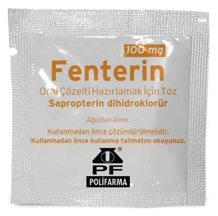

Fenterin 100 mg Oral Çözelti Hazırlamak İçin Toz (30 adet)

Ne için kullanılır
KT · Bölüm 1FENTERİN, tetrahidrobiopterin (BH4) adı verilen doğal molekülün sentetik bir kopyası olan sapropterin etkin maddesini içerir. BH4, vücudun fenilalanin adı verilen amino asidi kullanarak tirozin adı verilen diğer bir amino aside dönüşmesi için gereklidir.
FENTERİN hiperfenilalaninemi (HFA) ya da fenilketonüri (FKÜ) tedavisi için yetişkinlerde ve her yaştan çocuklarda kullanılır. HFA ve FKÜ, kanda zararlı olabilecek fenilalanin düzeyinin yüksekliği nedeniyle gelişir. FENTERİN BH4 tedavisine yanıt veren bazı hastalarda kanda fenilalanin düzeyini düşürür ve diyetle alınabilecek fenilalanin miktarının artırılmasına yardımcı olur.
FENTERİN vücudun yeterli BH4 üretemediği BH4 eksikliği adı verilen kalıtsal durumun tedavisinde de yetişkinlerde ve her yaştan çocuklarda kullanılır. BH4 düzeyi düşüklüğü nedeniyle fenilalanin uygun biçimde kullanılamaz ve fenilalanin düzeyleri zararlı olacak biçimde yükselir. Vücudun üretemediği BH4 yerine konarak FENTERİN tedavisi kandaki
yüksek fenilalanin düzeyinin zararlı etkilerini azaltır ve diyette alınabilecek fenilalanin toleransını artırır.